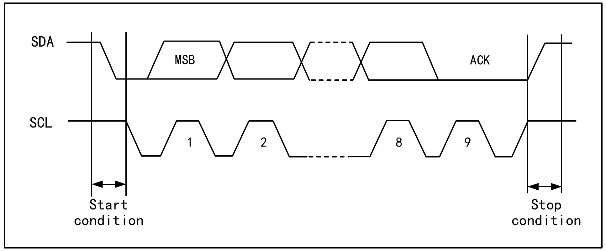
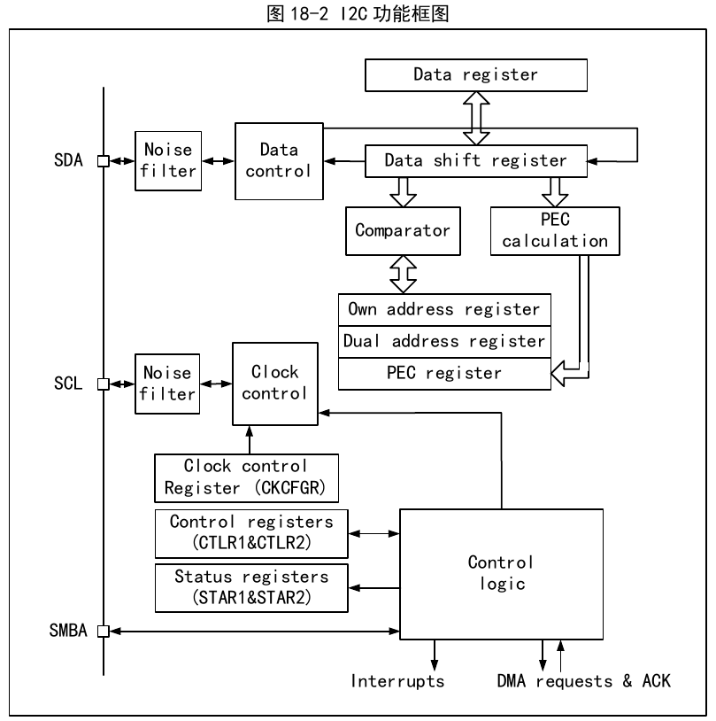
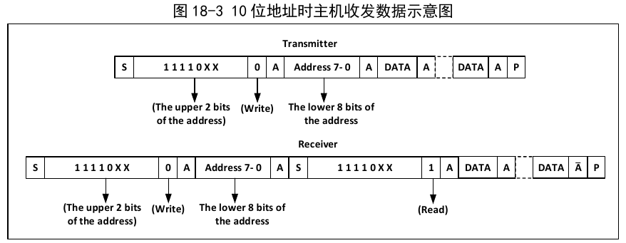
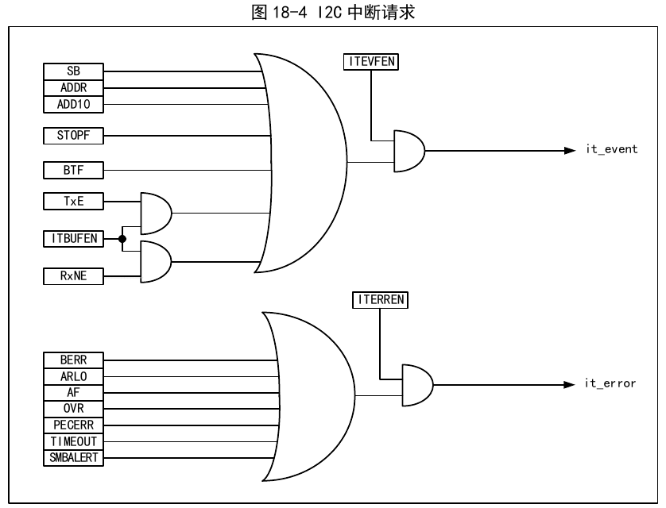

The Inter-Integrated Circuit bus (I2C) is widely used for communication between microcontrollers and sensors or other off-chip modules. It natively supports multi-master and multi-slave modes, and can communicate at two speeds — 100 kHz (standard) and 400 kHz (fast) — using only two lines (SDA and SCL). The I2C bus is also compatible with the SMBus protocol, supporting not only I2C timing but also arbitration, timing, and DMA, and provides a CRC checksum function.
I2C is a half-duplex bus; it can only operate in one of the following four modes at a time: master transmitter mode, master receiver mode, slave transmitter mode, and slave receiver mode. The I2C module operates in slave mode by default. After generating a START condition, it automatically switches to master mode; when arbitration is lost or a STOP condition is generated, it switches back to slave mode. The I2C module supports multi-master functionality.
In master mode, the I2C module actively sends out data and addresses. Both data and addresses are transmitted in 8-bit units, MSB first and LSB last. Following a START event, one byte (in 7-bit addressing mode) or two bytes (in 10-bit addressing mode) of address is sent. After every 8 bits of data or address transmitted by the master, the slave must reply with an acknowledge (ACK) by pulling the SDA line low, as shown in Figure 18-1.

To operate correctly, the I2C must be provided with a proper input clock. In standard mode, the minimum input clock is 2 MHz; in fast mode, the minimum input clock is 4 MHz.
Figure 18-2 shows the functional block diagram of the I2C module.

In master mode, the I2C module initiates data transfer and outputs the clock signal. Data transfer begins with a START event and ends with a STOP event. The steps for master-mode communication are as follows:
In 7-bit addressing mode, the first byte transmitted is the address byte: the upper 7 bits represent the target slave device address, and the 8th bit determines the direction of the subsequent message — 0 means the master writes data to the slave, and 1 means the master reads information from the slave.
In 10-bit addressing mode, as shown in Figure 18-3, during the address phase the first byte is 11110xx0 (xx is the upper 2 bits of the 10-bit address), and the second byte is the lower 8 bits of the 10-bit address. If the master subsequently enters transmitter mode, it continues sending data; if it prepares to enter receiver mode, it must re-issue a START condition followed by a byte 11110xx1, and then enter master receiver mode.

In transmitter mode, the master's internal shift register sends data from the data register onto the SDA line. When the master receives an ACK, the TxE bit in Status Register 1 (R16_I2C_STAR1) is set. If ITEVTEN and ITBUFEN are set, an interrupt is also generated. Writing data to the data register clears the TxE bit. If the TxE bit is set and no new data has been written to the data register before the last data transmission, the BTF bit is set; SCL is held low until it is cleared. Reading R16_I2C_STAR1 and then writing data to the data register clears the BTF bit.
In receiver mode, the I2C module receives data from the SDA line and writes it into the data register through the shift register. After each byte, if the ACK bit is set, the I2C module sends an acknowledge (low level), and the RxNE bit is set. If ITEVTEN and ITBUFEN are set, an interrupt is also generated. If RxNE is set and the previous data has not been read before new data is received, the BTF bit is set; SCL is held low until BTF is cleared. Reading R16_I2C_STAR1 and then reading the data register clears the BTF bit.
When the master finishes transmitting data, it actively generates a STOP event by setting the STOP bit. In receiver mode, the master must NAK the acknowledge position of the last data byte. Note that after generating a NAK, the I2C module switches to slave mode.
In slave mode, the I2C module can recognize its own address and the general call address. Software can enable or disable recognition of the general call address. Once a START event is detected, the I2C module compares the SDA data (via the shift register) with its own address (bit count depends on ENDUAL and ADDMODE) or the general call address (when ENGC is set). If there is no match, it ignores the data until a new START event is generated. If the header sequence matches, an ACK is generated and the module waits for the second address byte; if the second address byte also matches, or in 7-bit addressing the full address matches, then:
The slave mode defaults to receiver mode. When the last bit of the received header sequence is 1, or the last bit of a 7-bit address is 1 (depending on whether a header sequence or a normal 7-bit address was received first), the I2C module enters transmitter mode; the TRA bit indicates whether the current mode is receiver or transmitter.
In transmitter mode, after the ADDR bit is cleared, the I2C module sends bytes from the data register to the SDA line through the shift register. After receiving an ACK, the TxE bit is set. If ITEVTEN and ITBUFEN are set, an interrupt is generated. If TxE is set but no new data is written to the data register before the next data transmission completes, the BTF bit is set. SCL is held low until BTF is cleared. Reading Status Register 1 (R16_I2C_STAR1) and then writing data to the data register clears the BTF bit.
In receiver mode, after ADDR is cleared, the I2C module stores SDA data into the data register through the shift register. After each received byte, the I2C module sets an ACK bit and sets the RxNE bit. If ITEVTEN and ITBUFEN are set, an interrupt is generated. If RxNE is set and the old data has not been read before new data is received, BTF is set. SCL is held low until BTF is cleared. Reading Status Register 1 (R16_I2C_STAR1) and reading the data in the data register clears the BTF bit.
When the I2C module detects a STOP event, it sets the STOPF bit. If ITEVFEN is set, an interrupt is generated. The user must read the status register (R16_I2C_STAR1) and then write to the control register (e.g., reset the control word SWRST) to clear it.
During transmission of an address or data, when the I2C module detects an external START or STOP event, a bus error is generated. When a bus error occurs, the BERR bit is set; if ITERREN is set, an interrupt is also generated. In slave mode, the data is discarded and the hardware releases the bus. If it was a START signal, the hardware treats it as a repeated START and begins waiting for an address or STOP signal; if it was a STOP signal, it operates as a normal stop condition in advance. In master mode, the hardware does not release the bus and the current transfer is not affected; the user code decides whether to abort the transfer.
When the I2C module detects that no acknowledge follows a byte, an acknowledge error is generated. When an acknowledge error occurs: the AF bit is set; if ITERREN is set, an interrupt is also generated. Upon an AF error, if the I2C module is in slave mode, the hardware must release the bus; if in master mode, the software must generate a STOP event.
When the I2C module detects arbitration loss, an arbitration lost error is generated. When an arbitration lost error occurs: the ARLO bit is set; if ITERREN is set, an interrupt is also generated. The I2C module switches to slave mode and no longer responds to transfers addressed to its own slave address unless a master initiates a new START event; the hardware releases the bus.
Overrun error: In slave mode, if clock stretching is disabled and the I2C module is receiving data, if a new byte of data has been received but the previously received data has not yet been read, an overrun error occurs. When an overrun error occurs, the last received byte is discarded and the sender should retransmit the last byte sent.
Underrun error: In slave mode, if clock stretching is disabled and the I2C module is transmitting data, if new data has not been written to the data register before the clock of the next byte arrives, an underrun error occurs. When an underrun error occurs, the previous data in the data register is sent twice; the receiver should discard the duplicate data. To avoid underrun errors, the I2C module should write data to the data register before the first rising edge of the next byte.
If clock stretching is disabled, the possibility of overrun/underrun errors exists. However, if clock stretching is enabled:
Thus, enabling clock stretching avoids overrun/underrun errors.
SMBus is also a two-wire interface, typically used between system and power management. SMBus and I2C share many similarities; for example, SMBus uses the same 7-bit addressing mode as I2C. The following are common features of SMBus and I2C:
SMBus and I2C also differ:
SMBus also includes device identification, address resolution protocol, unique device identifiers, SMBus alert, and various bus protocols. Refer to the SMBus specification version 2.0 for details. When using SMBus, simply set the SMBUS bit in the control register, and configure the SMBTYPE and ENAARP bits as needed.
Each I2C module has two interrupt vectors: the event interrupt and the error interrupt. Both interrupt types support the interrupt sources shown in Figure 18-4.

DMA can be used for bulk data transmission and reception. When using DMA, the ITBUFEN bit in the control register must not be set.
DMA mode is activated by setting the DMAEN bit in the CTLR2 register. Whenever the TxE bit is set, data is loaded from the configured memory into the I2C data register by the DMA. The following settings are required to allocate a channel for the I2C:
When the number of data transfers configured in the DMA controller has been completed, the DMA controller sends an end-of-transfer EOT/EOT_1 signal to the I2C interface. If interrupts are enabled, a DMA interrupt is generated.
After setting the DMAEN bit in the CTLR2 register, DMA receive mode can be used. When using DMA reception, the DMA transfers data from the data register to a preset memory area. The following steps are required to allocate a channel for the I2C:
When the number of data transfers configured in the DMA controller has been completed, the DMA controller sends an end-of-transfer EOT/EOT_1 signal to the I2C interface. If interrupts are enabled, a DMA interrupt is generated.
Packet Error Checking (PEC) adds a CRC8 checksum step to improve transmission reliability. The following polynomial is used to calculate each serial data bit:
$$ C = X^8 + X^2 + X + 1 $$
PEC calculation is activated by the ENPEC bit in the control register and is computed over all message bytes, including the address and read/write bit. In transmission, when PEC is enabled, a one-byte CRC8 result is appended after the last data byte. In receive mode, the last byte is treated as the CRC8 checksum result; if it does not match the internally computed result, a NAK is returned. For a master receiver, a NAK is returned regardless of whether the checksum is correct or not.
After the system enters debug mode, the DBG_I2C_SMBUS_TIMEOUT bit of the DEBUG module can be used to determine whether the I2C SMBus timeout control continues to operate or stops.
| Name | Address | Description | Reset Value |
|---|---|---|---|
| R16_I2C_CTLR1 | 0x40005400 | I2C Control Register 1 | 0x0000 |
| R16_I2C_CTLR2 | 0x40005404 | I2C Control Register 2 | 0x0000 |
| R16_I2C_OADDR1 | 0x40005408 | I2C Address Register 1 | 0x0000 |
| R16_I2C_OADDR2 | 0x4000540C | I2C Address Register 2 | 0x0000 |
| R16_I2C_DATAR | 0x40005410 | I2C Data Register | 0x0000 |
| R16_I2C_STAR1 | 0x40005414 | I2C Status Register 1 | 0x0000 |
| R16_I2C_STAR2 | 0x40005418 | I2C Status Register 2 | 0x0000 |
| R16_I2C_CKCFGR | 0x4000541C | I2C Clock Register | 0x0000 |
| R16_I2C_RTR | 0x40005420 | I2C Rise Time Register | 0x0002 |
Offset address: 0x00
| 15 | 14 | 13 | 12 | 11 | 10 | 9 | 8 | 7 | 6 | 5 | 4 | 3 | 2 | 1 | 0 |
|---|---|---|---|---|---|---|---|---|---|---|---|---|---|---|---|
| SWRST | Reserved | ALERT | PEC | POS | ACK | STOP | START | NOSTRETCH | ENGC | ENPEC | ENARP | SMBTYPE | Reserved | SMBUS | PE |
| Bits | Name | Access | Description | Reset |
|---|---|---|---|---|
| 15 | SWRST | RW | Software reset. Setting this bit by user code resets the I2C peripheral. Before resetting, ensure the I2C bus pins are released and the bus is idle. Note: This bit can be used to reset the I2C module when no STOP condition is detected on the bus but the BUSY bit is 1. | 0 |
| 14 | Reserved | RO | Reserved. | 0 |
| 13 | ALERT | RW | SMBus alert bit. User code can set or clear this bit; when PE is set, this bit can be cleared by hardware. 1: Drives the SMBusALERT pin low, and the response address header should follow the ACK signal; 0: Releases the SMBusALERT pin high, and the response address header should follow the NACK signal. | 0 |
| 12 | PEC | RW | Packet error checking enable bit. Setting this bit enables PEC. User code can set or clear this bit; it is cleared by hardware after PEC is transferred, a START or STOP is generated, or PE is cleared. 1: With PEC; 0: Without PEC. Note: PEC is invalidated upon arbitration loss. | 0 |
| 11 | POS | RW | ACK and PEC position control. This bit can be set or cleared by user code, and can be cleared by hardware when PE is cleared. 1: The ACK bit controls the ACK/NAK of the next byte received in the shift register; the PEC indicates that the next byte in the shift register is PEC. 0: The ACK bit controls the ACK/NAK of the byte currently being received in the shift register; the PEC bit indicates that the current byte in the shift register is PEC. Note: The usage of the POS bit in 2-byte data reception is as follows: It must be configured before reception. To NACK the 2nd byte, the ACK bit must be cleared immediately after clearing the ADDR bit; to detect the PEC of the second byte, the PEC bit must be set after configuring the POS bit following the ADDR event. | 0 |
| 10 | ACK | RW | Acknowledge enable bit. Can be set or cleared by user code; can be cleared by hardware when PE is set. 1: Returns an acknowledge after receiving a byte; 0: No acknowledge. | 0 |
| 9 | STOP | RW | STOP event generation bit. Can be set or cleared by user code, cleared by hardware when a STOP event is detected, or set by hardware when a timeout error is detected. Master mode: 1: Generates a STOP event after the current byte transfer or current START condition; 0: No STOP event generated. Slave mode: 1: Releases SCL and SDA lines after the current byte transfer; 0: No STOP event generated. | 0 |
| 8 | START | RW | START event generation bit. Can be set or cleared by user code, cleared by hardware when a START condition is issued or PE is cleared. Master mode: 1: Repeatedly generates a START event; 0: No START event generated. Slave mode: 1: Generates a START event when the bus is idle; 0: No START event generated. | 0 |
| 7 | NOSTRETCH | RW | Clock stretching disable bit. Used to disable clock stretching in slave mode when the ADDR or BTF flag is set, until cleared by software. 1: Disable clock stretching; 0: Enable clock stretching. | 0 |
| 6 | ENGC | RW | General call enable bit. Setting this bit enables general call, acknowledging the general call address 00h. | 0 |
| 5 | ENPEC | RW | PEC enable bit. Setting this bit enables PEC calculation. | 0 |
| 4 | ENARP | RW | ARP enable bit. Setting this bit enables ARP. If SMBTYPE=0, the default address of the SMBus device is used; if SMBTYPE=1, the SMBus master address is used. | 0 |
| 3 | SMBTYPE | RW | SMBus device type. Set to 1 for SMBus master, set to 0 for SMBus slave. | 0 |
| 2 | Reserved | RO | Reserved. | 0 |
| 1 | SMBUS | RW | SMBus mode select. Set to 1 to use SMBus mode; set to 0 to use I2C mode. | 0 |
| 0 | PE | RW | I2C peripheral enable bit. 1: Enable I2C module; 0: Disable I2C module. | 0 |
Offset address: 0x04
| 15 | 14 | 13 | 12 | 11 | 10 | 9 | 8 | 7 | 6 | 5 | 4 | 3 | 2 | 1 | 0 | |
|---|---|---|---|---|---|---|---|---|---|---|---|---|---|---|---|---|
| Reserved | Reserved | Reserved | LAST | DMAEN | ITBUFEN | ITEVTEN | ITERREN | Reserved | Reserved | FREQ[5] | FREQ[4] | FREQ[3] | FREQ[2] | FREQ[1] | FREQ[0] | — |
| Bits | Name | Access | Description | Reset |
|---|---|---|---|---|
| [15:13] | Reserved | RO | Reserved. | 0 |
| 12 | LAST | RW | DMA last transfer bit. 1: The next DMA EOT is the last transfer; 0: The next DMA EOT is not the last transfer. Note: This bit is used in master receiver mode to generate a NAK on the last received data byte. | 0 |
| 11 | DMAEN | RW | DMA request enable bit. Setting this bit allows DMA requests when TxE or RxNE is set. | 0 |
| 10 | ITBUFEN | RW | Buffer interrupt enable bit. 1: Generates an event interrupt when TxE or RxNE is set; 0: No interrupt when TxE or RxNE is set. | 0 |
| 9 | ITEVTEN | RW | Event interrupt enable bit. Setting this bit enables event interrupts. An interrupt is generated under the following conditions: SB=1 (master mode); ADDR=1 (master/slave mode); ADD10=1 (master mode); STOPF=1 (slave mode); BTF=1 with no TxE or RxNE event; if ITBUFEN=1, TxE event is 1; if ITBUFEN=1, RxNE event is 1. | 0 |
| 8 | ITERREN | RW | Error interrupt enable bit. Setting this bit enables error interrupts. An interrupt is generated under the following conditions: BERR=1; ARLO=1; AF=1; OVR=1; PECERR=1; TIMEOUT=1; SMBAlert=1. | 0 |
| [7:6] | Reserved | RO | Reserved. | 0 |
| [5:0] | FREQ[5:0] | RW | I2C module clock frequency field. The correct clock frequency must be entered to generate proper timing. The allowed range is 4–60 MHz. Must be set between 000100b and 111100b, in MHz. | 0 |
Offset address: 0x08
| 15 | 14 | 13 | 12 | 11 | 10 | 9 | 8 | 7 | 6 | 5 | 4 | 3 | 2 | 1 | 0 |
|---|---|---|---|---|---|---|---|---|---|---|---|---|---|---|---|
| ADDMODE | Reserved | Reserved | Reserved | Reserved | Reserved | ADD[9] | ADD[8] | ADD[7] | ADD[6] | ADD[5] | ADD[4] | ADD[3] | ADD[2] | ADD[1] | ADD0 |
| Bits | Name | Access | Description | Reset |
|---|---|---|---|---|
| 15 | ADDMODE | RW | Addressing mode. 1: 10-bit slave address (does not respond to 7-bit address); 0: 7-bit slave address (does not respond to 10-bit address). | 0 |
| [14:10] | Reserved | RO | Reserved. | 0 |
| [9:8] | ADD[9:8] | RW | Interface address; bits 9–8 when using 10-bit addressing, ignored when using 7-bit addressing. | 0 |
| [7:1] | ADD[7:1] | RW | Interface address, bits 7–1. | 0 |
| 0 | ADD0 | RW | Interface address; bit 0 when using 10-bit addressing, ignored when using 7-bit addressing. | 0 |
Offset address: 0x0C
| 15 | 14 | 13 | 12 | 11 | 10 | 9 | 8 | 7 | 6 | 5 | 4 | 3 | 2 | 1 | 0 |
|---|---|---|---|---|---|---|---|---|---|---|---|---|---|---|---|
| Reserved | Reserved | Reserved | Reserved | Reserved | Reserved | Reserved | Reserved | ADD2[7] | ADD2[6] | ADD2[5] | ADD2[4] | ADD2[3] | ADD2[2] | ADD2[1] | ENDUAL |
| Bits | Name | Access | Description | Reset |
|---|---|---|---|---|
| [15:8] | Reserved | RO | Reserved. | 0 |
| [7:1] | ADD2[7:1] | RW | Interface address; bits 7–1 of the address in dual address mode. | 0 |
| 0 | ENDUAL | RW | Dual address mode enable bit. Setting this bit allows ADD2 to also be recognized. | 0 |
Offset address: 0x10
| 15 | 14 | 13 | 12 | 11 | 10 | 9 | 8 | 7 | 6 | 5 | 4 | 3 | 2 | 1 | 0 |
|---|---|---|---|---|---|---|---|---|---|---|---|---|---|---|---|
| Reserved | Reserved | Reserved | Reserved | Reserved | Reserved | Reserved | Reserved | DR[7] | DR[6] | DR[5] | DR[4] | DR[3] | DR[2] | DR[1] | DR[0] |
| Bits | Name | Access | Description | Reset |
|---|---|---|---|---|
| [15:8] | Reserved | RO | Reserved. | 0 |
| [7:0] | DR[7:0] | RW | Data register. This field holds received data or data to be transmitted on the bus. | 0 |
Offset address: 0x14
| 15 | 14 | 13 | 12 | 11 | 10 | 9 | 8 | 7 | 6 | 5 | 4 | 3 | 2 | 1 | 0 |
|---|---|---|---|---|---|---|---|---|---|---|---|---|---|---|---|
| SMBALERT | TIMEOUT | Reserved | PECERR | OVR | AF | ARLO | BERR | TxE | RxNE | Reserved | STOPF | ADD10 | BTF | ADDR | SB |
| Bits | Name | Access | Description | Reset |
|---|---|---|---|---|
| 15 | SMBALERT | RW0 | SMBus alert bit. Can be reset by user writing 0, or by hardware when PE goes low. In SMBus master mode: 1: SMBus alert generated on the pin; 0: No SMBus alert. In SMBus slave mode: 1: SMBAlert response address header received until SMBAlert goes low; 0: No SMBAlert response address header received. | 0 |
| 14 | TIMEOUT | RW0 | Timeout or Tlow error flag. Can be reset by user writing 0, or by hardware when PE goes low. 1: SCL has been low for 25 ms, or master low-level accumulated clock stretch time exceeds 10 ms, or slave low-level accumulated time exceeds 25 ms; 0: No timeout error. Note: In slave mode when this bit is set, the slave resets communication and the hardware releases the bus; in master mode when this bit is set, the hardware generates a stop condition. | 0 |
| 13 | Reserved | RO | Reserved. | 0 |
| 12 | PECERR | RW0 | PEC error flag during reception. Can be reset by user writing 0, or by hardware when PE goes low. 1: PEC error; returns NAK after receiving PEC; 0: No PEC error. | 0 |
| 11 | OVR | RW0 | Overrun/underrun flag. 1: Overrun/underrun event occurred: when NOSTRETCH=1, in receive mode a new byte is received but the content in the data register has not been read, so the newly received byte is lost; in transmit mode, no new data is written to the data register and the same byte is sent twice; 0: No overrun/underrun event. | 0 |
| 10 | AF | RW0 | Acknowledge failure flag. Can be reset by user writing 0, or by hardware when PE goes low. 1: Acknowledge error; 0: Acknowledge normal. | 0 |
| 9 | ARLO | RW0 | Arbitration lost flag. Can be reset by user writing 0, or by hardware when PE goes low. 1: Arbitration lost detected, the module lost control of the bus; 0: Arbitration normal. | 0 |
| 8 | BERR | RW0 | Bus error flag. Can be reset by user writing 0, or by hardware when PE goes low. 1: START or STOP condition error; 0: Normal. | 0 |
| 7 | TxE | RO | Data register empty flag. Cleared by writing data to the data register, or automatically by hardware after a START or STOP is generated, or when PE is 0. 1: Transmit data register empty; 0: Data register not empty. | 0 |
| 6 | RxNE | RO | Data register not empty flag. Cleared by read/write operation on the data register, or by hardware when PE is 0. 1: Data register not empty during reception; 0: Normal. | 0 |
| 5 | Reserved | RO | Reserved. | 0 |
| 4 | STOPF | RO | STOP event flag. Cleared by a write operation to Control Register 1 after the user reads Status Register 1, or by hardware when PE is 0. 1: The slave detected a STOP event on the bus after an acknowledge; 0: No STOP event detected. | 0 |
| 3 | ADD10 | RO | 10-bit address header sent flag. Cleared by a write operation to Control Register 1 after the user reads Status Register 1, or by hardware when PE is 0. 1: In 10-bit addressing mode, the master has sent the first address byte; 0: None. | 0 |
| 2 | BTF | RO | Byte transfer finished flag. Cleared by a read/write operation on the data register after the user reads Status Register 1; during transfer, cleared by hardware after a START or STOP is generated, or when PE is 0. 1: Byte transfer finished. When NOSTRETCH=0: in transmit mode, when new data is sent and the data register has not been written with new data; in receive mode, when a new byte is received but the data register has not been read; 0: None. | 0 |
| 1 | ADDR | RW0 | Address sent/matched flag. Cleared by a read operation on Status Register 2 after the user reads Status Register 1, or by hardware when PE is 0. Master mode: 1: Address sent complete — in 10-bit addressing mode, set after receiving the ACK of the second address byte; in 7-bit addressing mode, set after receiving the ACK of the address; 0: Address sending not complete. Slave mode: 1: Received address matched; 0: Address did not match or no address received. | 0 |
| 0 | SB | RO | Start bit sent flag. Cleared by a write operation to the data register after reading Status Register 1, or by hardware when PE is 0. 1: Start bit sent; 0: Start bit not sent. | 0 |
Offset address: 0x18
| 15 | 14 | 13 | 12 | 11 | 10 | 9 | 8 | 7 | 6 | 5 | 4 | 3 | 2 | 1 | 0 |
|---|---|---|---|---|---|---|---|---|---|---|---|---|---|---|---|
| PEC[7] | PEC[6] | PEC[5] | PEC[4] | PEC[3] | PEC[2] | PEC[1] | PEC[0] | DUALF | SMBHOST | SMBDEFAULT | GENCALL | Reserved | TRA | BUSY | MSL |
| Bits | Name | Access | Description | Reset |
|---|---|---|---|---|
| [15:8] | PEC[7:0] | RO | Packet error checking field. When PEC is enabled (ENPEC set), this field holds the PEC value. | 0 |
| 7 | DUALF | RO | Dual flag (matched). Cleared by hardware when a STOP or START is generated, or when PE=0. 1: The received address matches the content of OAR2; 0: The received address matches the content of OAR1. | 0 |
| 6 | SMBHOST | RO | SMBus host header flag. Cleared by hardware when a STOP or START is generated, or when PE=0. 1: When SMBTYPE=1 and ENARP=1, the SMBus host address was received; 0: SMBus host address not received. | 0 |
| 5 | SMBDEFAULT | RO | SMBus device default address flag. Cleared by hardware when a STOP or START is generated, or when PE=0. 1: When ENARP=1, the SMBus device default address was received; 0: Address not received. | 0 |
| 4 | GENCALL | RO | General call address flag. Cleared by hardware when a STOP or START is generated, or when PE=0. 1: When ENGC=1, the general call address was received; 0: General call address not received. | 0 |
| 3 | Reserved | RO | Reserved. | 0 |
| 2 | TRA | RO | Transmitter/receiver flag. Cleared by hardware when a STOP event is detected (STOPF=1), a repeated START condition, bus arbitration is lost (ARLO=1), or PE=0. 1: Data transmitted; 0: Data received. This bit is determined by the R/W bit of the address byte. | 0 |
| 1 | BUSY | RO | Bus busy flag. Cleared when a STOP condition is detected. This information is still updated when the interface is disabled (PE=0). 1: Bus busy: SDA or SCL is low; 0: Bus idle, no communication. | 0 |
| 0 | MSL | RO | Master/slave mode indicator. Set by hardware when the interface is in master mode (SB=1); cleared by hardware when a STOP is detected on the bus, arbitration is lost, or PE=0. | 0 |
Offset address: 0x1C
| 15 | 14 | 13 | 12 | 11 | 10 | 9 | 8 | 7 | 6 | 5 | 4 | 3 | 2 | 1 | 0 |
|---|---|---|---|---|---|---|---|---|---|---|---|---|---|---|---|
| F/S | DUTY | Reserved | Reserved | CCR[11] | CCR[10] | CCR[9] | CCR[8] | CCR[7] | CCR[6] | CCR[5] | CCR[4] | CCR[3] | CCR[2] | CCR[1] | CCR[0] |
| Bits | Name | Access | Description | Reset |
|---|---|---|---|---|
| 15 | F/S | RW | Master mode select bit. 1: Fast mode; 0: Standard mode. | 0 |
| 14 | DUTY | RW | Duty cycle in fast mode: 1: Tlow/Thigh = 16/9; 0: Tlow/Thigh = 2. | 0 |
| [13:12] | Reserved | RO | Reserved. | 0 |
| [11:0] | CCR[11:0] | RW | Clock divider coefficient field; determines the SCL clock frequency waveform. | 0 |
Offset address: 0x20
| 15 | 14 | 13 | 12 | 11 | 10 | 9 | 8 | 7 | 6 | 5 | 4 | 3 | 2 | 1 | 0 |
|---|---|---|---|---|---|---|---|---|---|---|---|---|---|---|---|
| Reserved | Reserved | Reserved | Reserved | Reserved | Reserved | Reserved | Reserved | Reserved | Reserved | TRISE[5] | TRISE[4] | TRISE[3] | TRISE[2] | TRISE[1] | TRISE[0] |
| Bits | Name | Access | Description | Reset |
|---|---|---|---|---|
| [15:6] | Reserved | RO | Reserved. | 0 |
| [5:0] | TRISE[5:0] | RW | Maximum rise time field. Sets the SCL rise time in master mode. The maximum rise time equals (TRISE − 1) clock cycles. This bit can only be set when PE is cleared. For example, if the I2C module input clock period is 125 ns and TRISE is 9, the maximum rise time is (9 − 1) × 125 ns = 1000 ns. | 000010b |